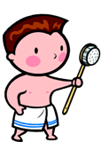
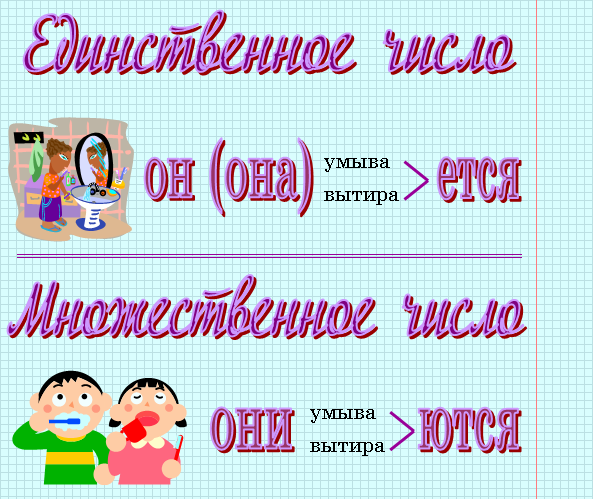
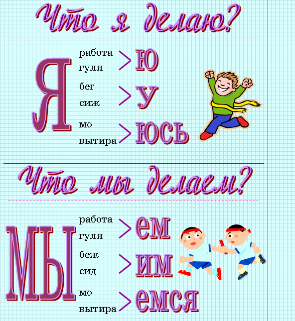
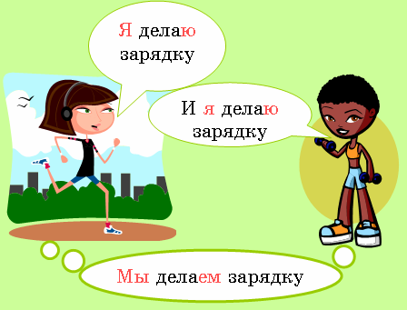

Что он делает?
Петя умывается.
Что она делает?
Оля умывается.

Что они делают?
Они умываются.


 |
|
| Это Петя. Что он делает? Петя умывается. |
Это Оля. Что она делает? Оля умывается. |
|
|
| Это Петя и Оля. Что они делают? Они умываются. |
|
